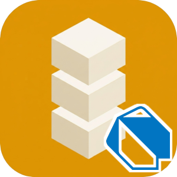

Identisure Dart Client

API client for the Identisure REST API.
Documentation: identisure.github.io/api-client-dart
Requirements
Dart 3.4 or later.
Supported providers
- BankID SE: auth, sign, phone auth and sign, QR verify, age verification
- BankID NO: auth, backchannel auth, sign, age verification
- Freja eID: auth, backchannel auth, sign, backchannel sign, age verification
- MitID: auth, backchannel auth, sign, age verification
- FTN (Finnish Trust Network): auth, age verification
- Vipps MobilePay: auth, backchannel auth
- Documents: upload and download documents for signing
Installation
dart pub add identisure_client
Usage
import 'package:identisure_client/identisure_client.dart';
Future<void> main() async {
final client = IdentisureClientBuilder('client_id', 'client_secret')
.environment(Environment.staging)
.build();
final session = await client.bankIdSe.auth(const BankIdSeAuthRequest());
if (session is BankIdSePending) {
print('Session ID: ${session.id}');
final result = await client.bankIdSe.waitForAuth(session.id);
final message = switch (result) {
BankIdSeCompleted(:final name, :final ssn) => 'Authenticated: $name ($ssn)',
BankIdSeFailed(:final error) => 'Failed: $error',
BankIdSePending() => 'Still pending',
BankIdSeUnknown(:final status) => 'Unknown status: $status',
};
print(message);
}
client.close();
}
Verifying callbacks
Pass the raw request body exactly as received, before parsing it.
final valid = verifyCallbackSignature(rawBodyBytes, request.headers['x-signature-sha256']!, hmacSecret);
Development
Prerequisites
- Dart 3.4+
The tests load shared fixtures from a git submodule. Clone with --recurse-submodules, or run git submodule update --init in an existing clone.
Build / Test / Analyze
dart pub get
dart test
dart analyze
Release
Set the version in pubspec.yaml and lib/src/transport.dart and commit. Then push a tag:
git tag v0.1.0
git push origin v0.1.0
The release workflow checks that the tag matches the version, runs CI, publishes to pub.dev and creates a GitHub release.
Other languages
C#, Go, TypeScript/JavaScript, Java/Kotlin, PHP, Python, Ruby, Rust, Swift